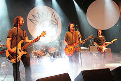
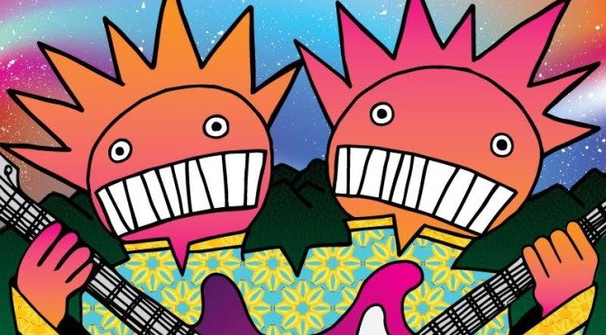

Ween es un grupo de rock alternativo estadounidense formado a mediados de los años 80 por Aaron Freeman y Mickey Melchiondo, que utilizan los seudónimos de Gene Ween y Dean Ween respectivamente.
 Melchiondo y Freeman se conocieron en 1984 en New Hope, Pensilvania, cuando ambos tenían 14 años, e inmediatamente formaron el grupo. Al poco tiempo comenzaron a editar casetes por su cuenta, hasta que en 1990 editaron su primer LP, GodWeenSatan: The Oneness, por medio de un sello independiente. En 1992 el dúo editó Pure Guava, su primer álbum con un sello grande (Elektra Records). Aunque el grupo siguió editando material por medio de sellos "grandes" durante los años 90, también fundó su propio sello independiente, Chocodog.
La banda es reconocida por su eclecticismo y por su estilo que ha sido descrito como posmoderno, en el que combinan letras humorísticas, surreales y políticamente incorrectas con un sonido lo-fi (en sus primeros álbumes), voces distorsionadas y una gran cantidad de influencias de artistas a los que homenajean o parodian. Esto llevó a muchos críticos a considerar al grupo como una banda que se dedica a hacer parodias, descripción que el grupo rechaza.
